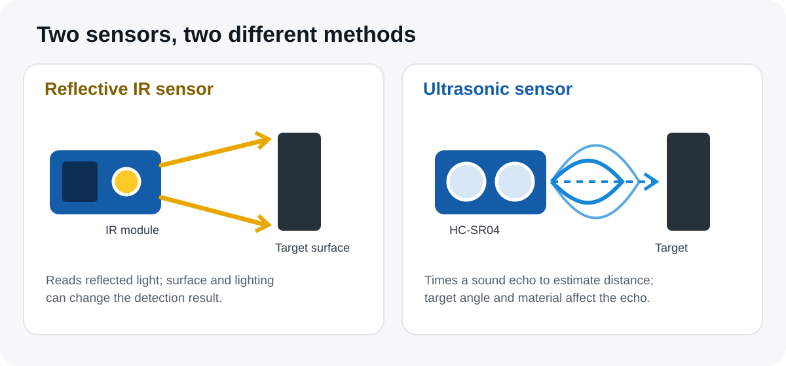
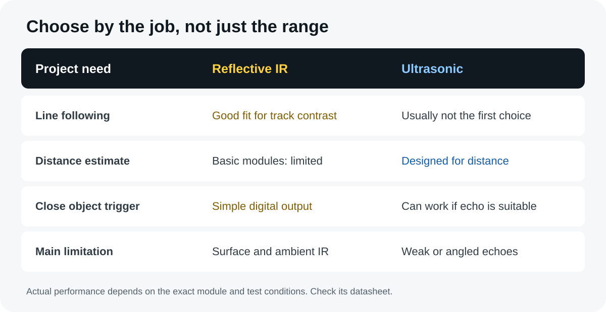
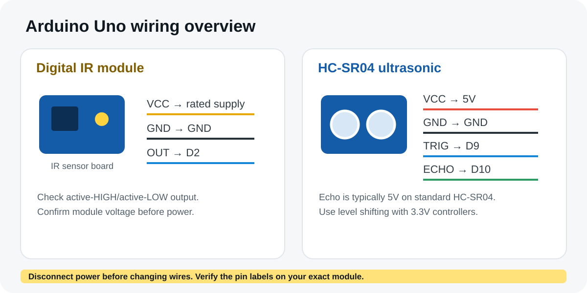

Before comparing the two modules, start with the IR sensor working principle and applications. An IR sensor detects reflected infrared light, while an ultrasonic sensor estimates distance from a returning sound echo. Knowing this difference helps you choose the right sensor for line following, object detection or distance measurement.
This comparison focuses on common low-cost modules used with an Arduino Uno: a reflective digital IR sensor module and the HC-SR04 ultrasonic distance sensor. Other IR sensors—including break-beam, remote-control receivers and thermal sensors—work differently, so their specifications should not be treated as interchangeable.

IR sensor vs ultrasonic sensor: the quick answer
- Choose a reflective IR module for close-range surface detection, simple object triggers or line-following experiments where contrast is useful.
- Choose an ultrasonic sensor such as the HC-SR04 when you need a distance estimate to a suitable target and can use timed echo readings.
- Test the actual module in its real environment. Surface finish, angle, light, sound-absorbing materials and the shape of the target can all affect results.
Neither option is automatically more accurate in every project. A sensor is a good fit when its sensing method matches the target, the distance and the conditions where it will operate.
How does each sensor work?
How a reflective IR sensor works
A common reflective infrared (IR) module has an IR LED that sends light toward a nearby surface and a receiver that detects some of the reflected light. Many inexpensive boards use a comparator to turn the receiver signal into a digital output. A small potentiometer, when fitted, adjusts the detection threshold.
The module is responding to reflected light, not measuring distance directly. A dark, shiny, angled or distant target may return a different signal from a light, matte target. Ambient sunlight and the sensor's mounting height can also change how it behaves.
Check the pin labels and output behaviour of your own module before you write the final control logic.
How an ultrasonic sensor works
The HC-SR04 sends a short ultrasonic burst and measures how long the echo takes to return. The controller uses the round-trip time to estimate the distance to a reflecting target. Because the sound travels to the target and back, the calculation divides the travel distance by two.
The familiar HC-SR04 is often listed with a nominal measurement range of about 2–400 cm under suitable conditions. Treat that as a module specification, not a guarantee: soft materials, angled surfaces, narrow objects, nearby obstacles and the room's acoustics may cause missing or unstable echoes.
For pinout and practical setup details, read the HC-SR04 ultrasonic sensor guide.
IR vs ultrasonic sensor: comparison table
| Feature | Reflective digital IR module | HC-SR04 ultrasonic sensor |
|---|---|---|
| Main job | Detects reflected IR from a nearby surface | Estimates distance from an echo time |
| Typical output | Usually digital HIGH/LOW on simple modules; some sensors provide analog output | Trigger input plus timed Echo output |
| Distance information | Usually a detection threshold, not a reliable distance value | Approximate distance within the sensor's usable range |
| What affects readings? | Surface colour and reflectivity, angle, height, ambient IR and threshold setting | Target angle and area, sound absorption, obstacles, temperature and echo timing |
| Useful for | Line contrast, close object detection, counters with suitable sensor placement | Obstacle distance, level prototypes, proximity alerts and many non-contact measurements |
| Controller work | Often a simple digital read | Accurate timing of the echo pulse or a suitable pulse-measurement function |
| Cost and setup | Often very inexpensive and simple to test | Still low-cost, but needs two signal connections and timing logic |
| Main limitation | Detection changes with the target surface and lighting | Needs a suitable echo; angled or sound-absorbing targets can be difficult |

This table compares common hobby modules, not every sensor sold as “IR” or “ultrasonic.” If you are choosing an industrial sensor, read its datasheet and environmental ratings instead of relying on a generic comparison.
QUICK DECISION RULE
Choose a reflective IR module when the task is to detect a nearby surface or contrast change. Choose the HC-SR04 when the project needs an approximate distance to a suitable target. If the project needs dependable measurements in sunlight, around soft or angled objects, or in a safety-critical setting, test a suitable sensor designed for those conditions rather than relying on this general rule.
Range and accuracy: what to expect
People often ask which sensor has the longer range. The answer depends on the exact model and what it must detect. A basic reflective IR board is typically best treated as a short-range detector. Its sensitivity setting may make an object trigger farther away, but that does not turn it into a calibrated distance sensor.
The HC-SR04 is designed to estimate distance. Its published nominal range is commonly around 2–400 cm, but the useful range in a real build may be narrower. A small object, soft fabric or a target turned at an angle may reflect too little sound back to the receiver. Readings can also become unstable when another object is close to the target.
For a fair test, keep the target, its angle, the mounting and the surrounding conditions consistent. Take several readings at known distances and check how often each sensor detects the target correctly. For distance measurement, compare the ultrasonic result against a ruler or another suitable reference. For line following, test across the actual track and floor, not only a white desk.
GOOD TESTING PRACTICE
Do not compare the maximum advertised range of one module with the detection threshold of another as if they were the same measurement. First decide whether your project needs a yes/no detection signal or an estimated distance.
Which sensor is better for your Arduino project?
Line-following robot
Reflective IR sensors are usually the natural starting point. They can detect the contrast between a track and its background when mounted at a suitable height. Their output still depends on track material, sensor spacing and module polarity. Test each sensor over both surfaces before tuning the motor logic.
For a complete build example, use this tutorial on a line follower robot using Arduino. It complements this comparison by showing how sensing becomes part of a moving robot.
Obstacle detection for a small robot
Either sensor may work, depending on the job. An IR module can be enough when you only need a simple close-range trigger. The HC-SR04 is useful when the robot needs an approximate distance to a reflecting obstacle so it can stop or change direction before reaching it.
Do not assume one front-facing sensor can see every obstacle. Thin objects, angled surfaces and objects outside the sensor's field can be missed. Test the robot at a low speed in a clear area before relying on the result.
Distance measurement or a tank-level prototype
An ultrasonic sensor is generally the more suitable choice when the project needs a distance estimate rather than a simple trigger. For liquid-level prototypes, mount the sensor as instructed and check whether the tank geometry, condensation and surface movement affect the echo. Do not use a hobby module as a safety-rated or industrial level instrument.
Object counter or automatic trigger
A reflective IR module can count objects that pass a fixed sensing point, provided each item produces a clear change and the items are spaced far enough apart. Add edge detection and a suitable debounce or lockout interval in the code. If objects pass quickly, overlap, or have different surfaces, you may need a through-beam sensor or a module designed for counting.
Connecting the sensors to an Arduino Uno
Reflective IR module
- Connect VCC to the voltage specified for your exact module.
- Connect GND to Arduino GND.
- Connect OUT to a digital input such as D2.
Many common modules work from 3.3–5 V, but check the board's marking and product documentation first. The output may be LOW when an object is detected, so confirm that behaviour before using it in your sketch.
HC-SR04 ultrasonic module
- Connect VCC to 5 V and GND to GND for a standard HC-SR04 module.
- Connect TRIG to a digital output such as D9.
- Connect ECHO to a digital input such as D10.
The standard HC-SR04 Echo signal is typically 5 V. That is suitable for a classic 5 V Arduino Uno, but not for every 3.3 V microcontroller input. If using an ESP32 or another 3.3 V controller, use a proper level-shifting method on Echo and verify the exact board and module specifications.
BEFORE POWERING UP
Disconnect USB or other power while changing wires. Double-check VCC, GND and signal pins. Do not connect DC motors directly to Arduino I/O pins; use a suitable motor driver and an appropriate power supply.

Arduino code examples
These small sketches test one sensor at a time. Run them before combining the sensors with motors, buzzers or other outputs. The first example assumes that the IR module reports detection as LOW; change the constant if your board behaves differently.
Test a digital IR sensor
const int irPin = 2;
// Many modules go LOW when they detect a target.
// Check your module and change this if needed.
const int detectedState = LOW;
void setup() {
pinMode(irPin, INPUT);
Serial.begin(9600);
}
void loop() {
int state = digitalRead(irPin);
if (state == detectedState) {
Serial.println("Target detected");
} else {
Serial.println("No target detected");
}
delay(100);
}Open the Serial Monitor at 9600 baud. Move an object in and out of the sensing area and record the output. If the result flickers, adjust the module's sensitivity control if present and repeat the test with the target and lighting you plan to use.
Measure distance with an HC-SR04
const int trigPin = 9;
const int echoPin = 10;
void setup() {
pinMode(trigPin, OUTPUT);
pinMode(echoPin, INPUT);
digitalWrite(trigPin, LOW);
Serial.begin(9600);
}
void loop() {
digitalWrite(trigPin, LOW);
delayMicroseconds(2);
digitalWrite(trigPin, HIGH);
delayMicroseconds(10);
digitalWrite(trigPin, LOW);
// Timeout prevents waiting indefinitely for an echo.
unsigned long duration = pulseIn(echoPin, HIGH, 30000UL);
if (duration == 0) {
Serial.println("No echo - check target and wiring");
} else {
// Approximate distance in centimetres for sound in air.
float distanceCm = duration * 0.0343f / 2.0f;
Serial.print("Distance: ");
Serial.print(distanceCm, 1);
Serial.println(" cm");
}
delay(100);
}The speed-of-sound value in this example is an approximation for ordinary room conditions. Temperature and the specific environment affect sound speed. The timeout also means a missing echo produces a “No echo” message rather than a valid distance of zero.
For a moving robot: pulseIn() waits for the echo and can pause the rest of your loop. This sketch is suitable for a basic bench test; for responsive motor control, consider non-blocking timing or a sensor library, reject missing/out-of-range readings, and test braking distance at low speed.
Run a quick bench test before building
A short, repeatable test tells you more than a headline range or a single successful reading. Test the sensor you actually have, with the target and lighting or surroundings expected in your project.
- Fix the setup. Secure the sensor, check its voltage and pinout, and keep the target in a marked position. Do not move the sensor between readings.
- Test the IR module. Try the real track or object at several positions. Record whether detection is consistent, then repeat under the lighting expected during use.
- Test the ultrasonic module. Place a flat target at measured distances within the sensor's expected range. Take several readings at each distance and note missing echoes as failures, not as zero-distance measurements.
- Test difficult cases. Repeat with the target angled and with the actual material. For a robot, test with motors stopped first, then running, at low speed.
- Set a pass rule. Decide what error or missed-detection rate your project can tolerate. If the sensor fails that rule, change the mounting or choose a different sensing method.
| Test condition | IR module: result | HC-SR04: result |
|---|---|---|
| Target / surface used | Record your observation | Record your observation |
| Distance or mounting height | Record the setup | Record the setup |
| Repeated detections / readings | Record successes and misses | Record readings and missing echoes |
| Lighting / target angle | Note any change | Note any change |
| Final suitability | Pass / adjust / unsuitable | Pass / adjust / unsuitable |
This is a test worksheet, not a claim that either sensor has been independently measured here. Your own recorded results make the decision more reliable and can reveal problems that generic specifications cannot.
Common problems and how to fix them
The IR sensor always reports detection or no detection
- Verify VCC, GND and OUT wiring.
- Check whether the module uses active-LOW or active-HIGH output.
- Adjust its threshold slowly if it has a potentiometer.
- Test a different target and change the sensor height or angle.
- Try to shield the sensor from strong direct sunlight during the initial test.
The ultrasonic sensor prints zero or jumps between values
- Confirm TRIG and ECHO are connected to the pins used in the sketch.
- Check the target is within the usable range and facing the sensor.
- Move away nearby objects that could return an unwanted echo.
- Make sure the target is large and reflective enough for the sensor to detect.
- Check power and ground; keep signal wires secure.
My robot turns too late or misses an obstacle
Test the sensor while the motors are stopped, then test again with the motors running. Motor noise, power dips, vibration, sensor placement and control-loop delays can affect the result. Slow the robot down while debugging and make sure the code handles missing or implausible readings safely.
Frequently asked questions
Is an IR sensor better than an ultrasonic sensor?
Neither is best for every task. IR is often a practical choice for close detection and line-following experiments. Ultrasonic sensing is more appropriate when you need an approximate distance to a suitable target.
Can an IR sensor measure distance?
A basic reflective digital module usually indicates whether the reflected signal has crossed a threshold. It should not be treated as a calibrated distance sensor. Some specialised IR distance sensors can estimate distance, but their principle and specifications are different.
Can I use both sensors on one Arduino?
Yes, when you have enough suitable pins and the wiring and timing are managed correctly. Test each module separately first, then combine them and make sure one sensor's readings do not block the response time your project needs.
Will the HC-SR04 work with an ESP32?
The trigger signal can usually be driven from a compatible GPIO, but the standard HC-SR04 Echo output is typically 5 V. Use level shifting or another suitable interface to protect a 3.3 V ESP32 input, and check the exact board and sensor specifications.
Where can I find compatible boards and modules?
Before buying a module, compare its voltage, pinout, output type and stated operating limits with the requirements of your circuit. The correct part is the one that fits the job and can be connected safely to your controller.
NEXT STEP
Build a project with the right sensor
Choose the sensor by its job, test it on the bench, and only then add the motor or other output stage.
Explore the sensor learning hub →Technical note: Specifications vary between manufacturers and module revisions. Check the datasheet or product documentation supplied with your exact component before connecting power or relying on measurements.